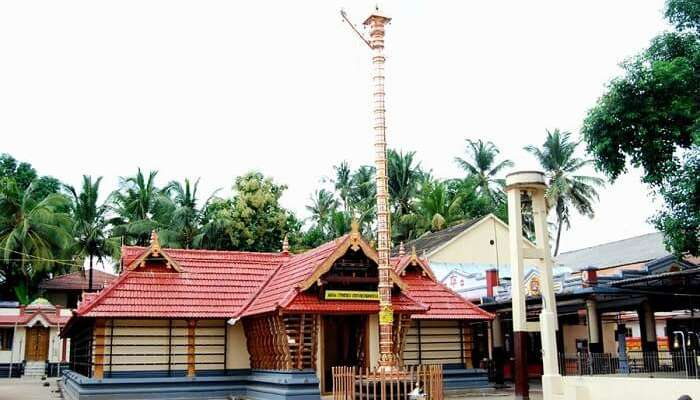
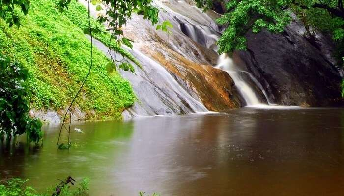

Places to visit in Palakkad

Palakkad or Palghat, situated in the foothills of the Nilgiris, is widely heralded as the gateway to Kerala. A natural break in the mountains, the Palakkad Gap connects Kerala to Tamil Nadu. It holds tremendous historical importance and with the blessing of the monsoons, magically turns fertile green. We bring you some of the best places to visit in Palakkad which include stunning natural wonders and ancient architecture.
- Palakkad Fort
- Vadakkanthara Temple 
- Dhoni Waterfalls 
- Malampuzha Dam
- Nelliyampathy Hills

The well-preserved Palakkad Fort features on all Palakkad sightseeing tours as it introduces guests to the history of Palakkad right from the rule of Zamorin to the Mysore Sultans and eventually the British. Built in 1766 A.D by Hyder Ali, it is also known as the Tipu Sultan Fort and is among the highest visited Palakkad tourist spots.
Location: Palakkad Highway, Kenathuparambu, Kunnathurmedu
The Sree Vadakkanthara Bhagavathy Temple is one of the revered temples in Palakkad and even visited by devotees from neighbouring states. The temple is based on the legend of Kannagi and a major festival ‘Vela’ is conducted here every three years, meaning the next one will be in 2022! It’s one of the best places in Palakkad to observe Hindu rituals and festivities
Location:Vadakkanthara, Palakkad, Kerala 678012
Dhoni is a tiny hamlet near Palakkad and is best known for its natural wealth. Paying a visit to these falls is truly one of the magical things to do in Palakkad. The Dhoni waterfalls and the forest combined together offer a reprieve from the heat and humidity of Palakkad. It is one of the best places to visit in Palakkad for a day trip. The forest is a part of western ghats and is ideal for bathing. This is one of the most beautiful waterfalls in Palakkad.
Location: Puthuppariyaram, Palakkad, Kerala 678591

The Malampuzha Dam has become one of the best tourist attractions in Palakkad. Opened in 1955, this beautiful park and dam have manicured lawns and still waters perfect for a visit during the monsoons. It is the only one among Palakkad tourist spots to have a functioning ropeway.
Location: Malampuzha Dam, Kerala 678651

About 60 KM from Palakkad lie the Nelliyampathy Hills, one of the far-off places to visit near Palakkad whose cloud-covered mountains are a delight! The well-laid road and beautiful scenery along the way including the Pothundy Dam and Palakkad Gap make it one of the best tourist places in Kerala for a one day trip.
Location:Nelliampathi, Kerala 678508